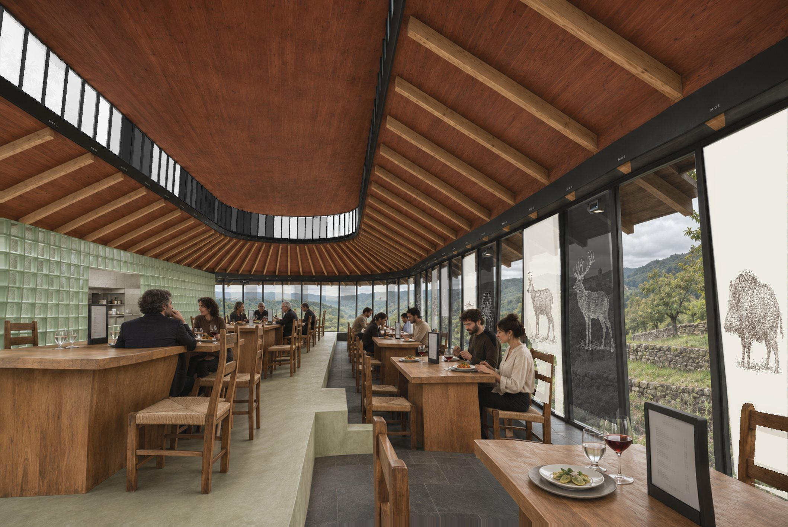
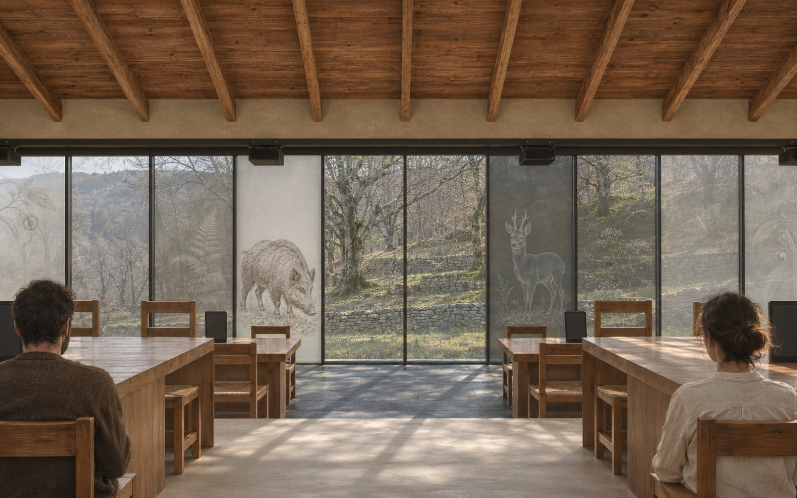
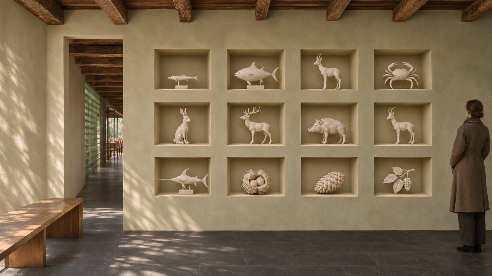
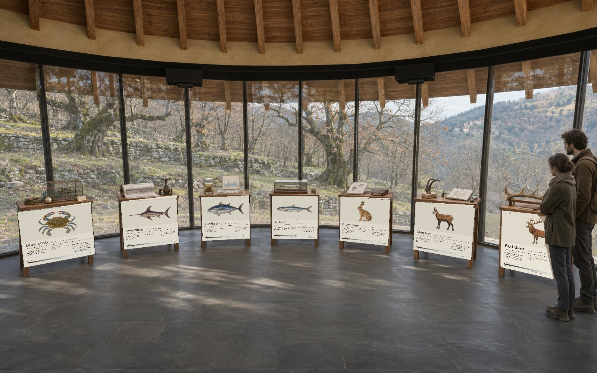
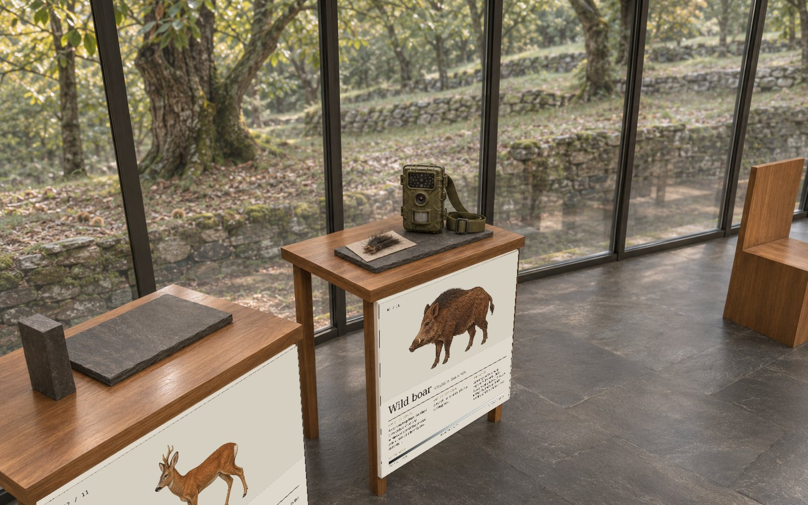

A long room on a terraced slope.
One storey of timber, lime and glass on the upper terrace of an old chestnut slope above Torriglia. Ten tables, forty seats, and every one of them by the glass.

Coming in
The path from the car park is level and ends at the square end of the building. The door opens into a small foyer with a chestnut bench, a place for coats, and a wall of small figures: one for every species on the menu.
The room runs from there to the round end, past the glass, the kitchen windows and the monitoring station. You leave through a glass door in the north wall, beside the station, out to the terrace path.
Two rows, one view
The tables sit in two rows. The back row is raised 45 cm, so the people behind look over the people in front and out to the valley. Both rows stop before the round end.
Behind a wall of green glass block, with windows at sitting height, are the kitchen and the monitoring station, where the counts from the hills come in each morning. Plates come through the pass in the middle of the room.
Under the glass head, one small projector for every three panes prints the species of each plate onto its pane: dark lines on white glass, white lines on dark. Clear glass catches nothing.


The round end
The round end is kept clear of dining. Eleven tables stand along its glass like a natural history room: one for each wild species, with a poster, a camera-trap still, and a few things brought down from the hills.
The glass here works like the rest of the room, white when there are too many, dark when there are too few.


Made from the slope
- Terrace walls
- Dry stone from the slope, rebuilt on the old lines
- Walls
- Lime render, left unpainted
- Floor
- Slate, as in the village
- Roof and rafters
- Timber, exposed inside
- Tables and chairs
- Chestnut, made locally
- Glass
- Floor to ceiling on the valley side, a second band above the roof; prints projected from under the head
Where it is
Above Torriglia, in the Ligurian Apennines, about forty minutes from Genova. Chestnut woods uphill, the valley below.